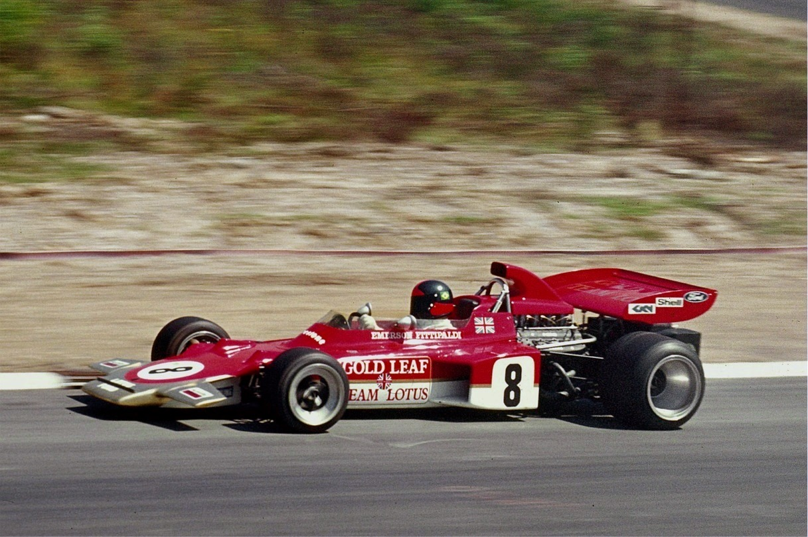
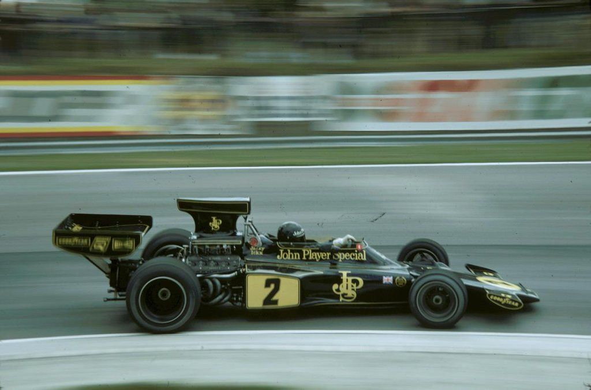
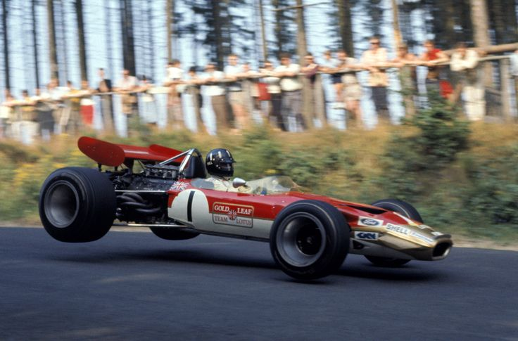

Developed by Leonardo Rosa Bittencourt
Lotus Grand Prix ou Team Lotus foi uma equipe de Fórmula 1 criada por Colin Chapman, que teria revolucionado a categoria por pelo menos 2 vezes: uma delas foi com o desenvolvimento do carro-asa, que conquistou o Campeonato Mundial de 1978 com Mario Andretti. Foi uma equipe da fábrica inglesa de carros Lotus Cars. A equipe fazia parte de muitas competições automotivas incluindo Fórmula 2, Fórmula Ford, Fórmula Júnior, ligas norte-americanas e Sports car racing. Durante as décadas de 60 e 70, a Lotus foi. junto com a Ferrari, a equipe mais tradicional e vitoriosa da categoria. No entanto, sua irreversível decadência nos anos 80 e sua primeira saída da F-1 em 1994, a fez dar lugar ao atual "Big Three" da Fórmula 1, formado por Ferrari, Mclaren e Williams. Durante a metade final de década de 90 e até o fim da de 2000 dedicou-se à produção de carros esportivos.
Caso queira acessar o artigo completo, clique aqui!
Qual sua data de nascimento?
Em que dia e hora você está acessando este conteúdo?
Quantos dias por semana em média você acessa conteúdo de F1?
Qual a pintura mais lhe agrada?



Das cores utilizadas pela Lotus ao longo de sua história, qual sua favorita?
Para você, quais pilotos foram mais marcantes?
Jim Clark
Graham Hill
Emerson Fittipaldi
Mario Andretti
Jochen Rindt
Ayrton Senna
Ronnie Peterson
Qual o ano mais importante em sua história?
Faça login e deixe seu comentário!
Email:
Celular:
Senha:
Comentário:
Para tirar outras dúvidas, pesquise:
Voltar ao portal